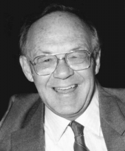

Please note: the AAS Obituaries are temporarily being hosted on this website while their full content is being ingested into the PubPub publishing platform newly adopted by the Bulletin of the American Astronomical Society. When the migration is complete, your existing links will take you to the final, migrated content. Contact peter.williams@aas.org with any questions.
William Merz Sinton (1925-2004)
Bill Sinton, one of the pioneers of infrared planetary astronomy, died at his home in Flagstaff, Arizona, on March 16th 2004, at the age of 78.
Bill was born in Baltimore on April 11, 1925. He developed lifelong interests in railroads and radios while still a child, and by age 15 he had already built a shortwave radio receiver and won his ham radio license. His abiding interest in electronic and mechanical devices would serve him well in his professional career. He fought with the 26th Infantry Division in the Second World War and was wounded in France in October 1944. After the war he obtained his bachelor's degree in physics at Johns Hopkins (1949). His doctoral work at the same institution, with John Strong, gave him his first taste of infrared astronomy, including the first measurements of the moon at 1-millimeter wavelength. He obtained his PhD, on the infrared spectrum and temperature of Venus, in 1953.
During a 1-year postdoc at Johns Hopkins he probed the lunar subsurface by observing the cooling of the moon during eclipse at millimeter wavelengths, and observed the diurnal variation in Martian surface temperatures in the 10-micron window. He joined Harvard College Observatory as a research associate and lecturer in 1954, and became interested in the question of life on Mars and the then-plausible possibility that Mars's dark markings were due to vegetation. In 1956, using a monochromator that he built himself, he detected absorptions near 3.4 microns in the Martian spectrum which he attributed to a C-H stretch transition in Martian vegetation. These "Sinton bands," as they came to be known, sparked great interest at the time, and though at least some of the spectral structure was later found to be due to terrestrial HDO, and the presence of abundant organic molecules on the Martian surface was finally ruled out by the Viking landers, some of the spectral features that he detected appear to be intrinsic to Mars and are still not well understood.
In 1957, Bill moved to Lowell Observatory, and spent the next nine years there. He considered these to be the most productive years of his career. In his time at Lowell, he continued his studies of the Moon's thermal emission, and built an infrared Michelson interferometer spectrometer that he put to use in identifying the 3.1-micron water of hydration band on Mars. He also met and married his wife Marge in 1960, and their three sons, Bob, David, and Alan were born during the Flagstaff years.
In 1965, Bill was invited by John Jefferies to join the faculty of the University of Hawaii, and to help in the development of the fledgling Mauna Kea Observatory. His work on the design the 88-inch telescope on Mauna Kea, the cornerstone of the observatory, included designing its telescope control system, making it one of the first computer-controlled optical telescopes. His scientific work at the Institute for Astronomy included continued studies of Mars, with his PhD student Terry Martin, as well as the infrared spectrum of Uranus and Neptune. He sometimes translated his pseudocolored maps of the thermal emission from the planets, pixel by pixel, into the unique medium of stained glass. In 1979, following the discovery of Io's volcanoes by Voyager, he obtained some of the first ground-based observations of the infrared thermal emission from the volcanoes. He devoted the last decade of his career to the ground-based study of Io's volcanoes, working to characterize their time variability and developing techniques to identify their locations on Io. He was one of the founding members of the International Jupiter Watch in 1987, and was the first leader of its Satellite Discipline.
When he retired from the University of Hawaii in 1990, he and Marge returned to Flagstaff, and he renewed his association with Lowell Observatory as an adjunct astronomer. He built a miniature steam-powered railroad around his house, to the delight of the neighborhood children who would get to ride on it on special occasions. In 1993 he was diagnosed with ALS (Lou Gehrig's disease), and was confined to a wheelchair shortly afterwards, but he continued to attend scientific meetings, and to contribute to Lowell Observatory as a member of its Advisory Board, till shortly before his death. In 2002 he published an autobiography, I Choose to Live, which described his life and his battle with ALS. Because he could no longer use a keyboard he wrote the entire book using voice-recognition software- a testament to his determination to keep as active and productive as possible despite the encroachments of the disease.We remember Bill as a warm, gentle, and enthusiastic man with an encyclopedic knowledge of all things infrared. He had a love of mechanical gadgets of all types, whether he was designing plumbing for a He3 cooled germanium bolometer or for a model steam engine. He is greatly missed by his family, friends, and former colleagues.
Within two weeks of Bill's death came the announcement that CH4 gas had been discovered on Mars by the Mars Express spacecraft, confirming similar results from ground-based telescopes. The methane, touted as possible evidence for extant Martian life, was discovered via its 3.3-micron C-H stretch band. This is essentially the same vibrational transition, potentially carrying the same hints of living Martian organisms, which Bill thought he had seen on Mars 45 years earlier. So while Bill's initial conclusion that Mars is covered with extensive vegetation turned out to be wrong, his insight that the 3-micron region, with its telltale signature of carbon-hydrogen bonds, was the best place to search for evidence of life on our sister world, may have been right all along.
Obituary written by: John Spencer (Lowell Observatory)
BAAS Citation: BAAS, 2004, 36, 1684
SAO/NASA ADS Bibcode: 2004BAAS...36.1685S